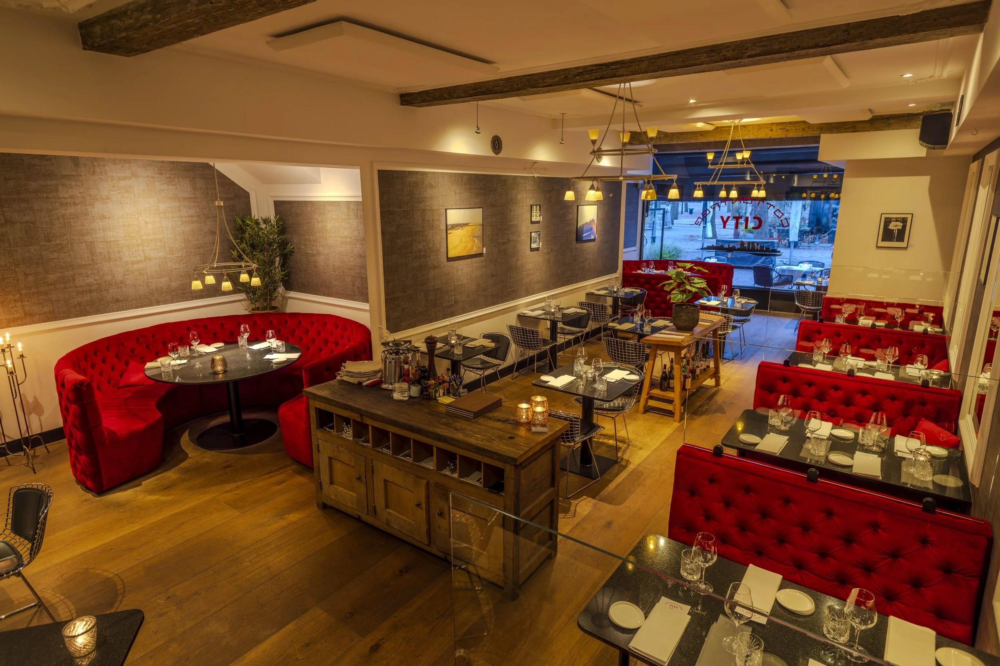
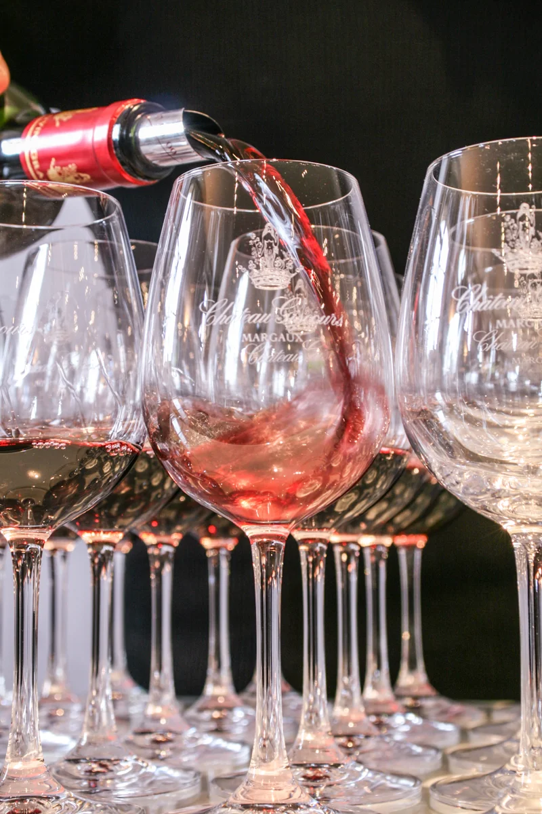
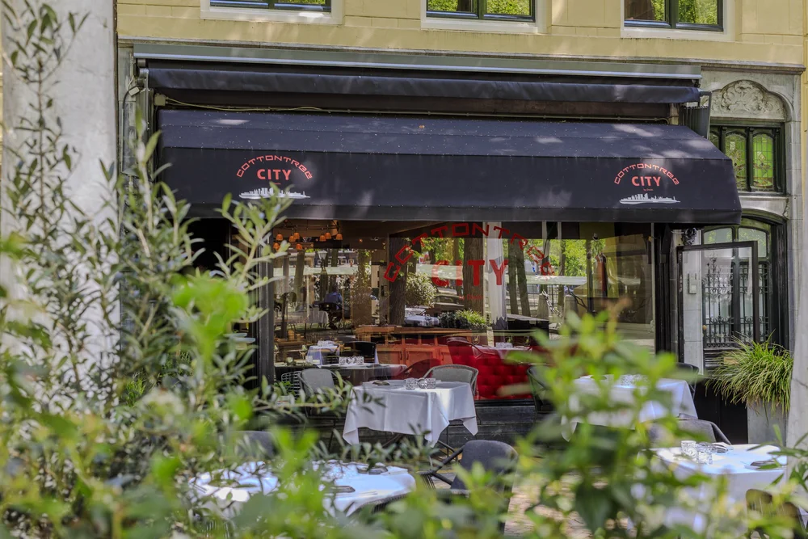
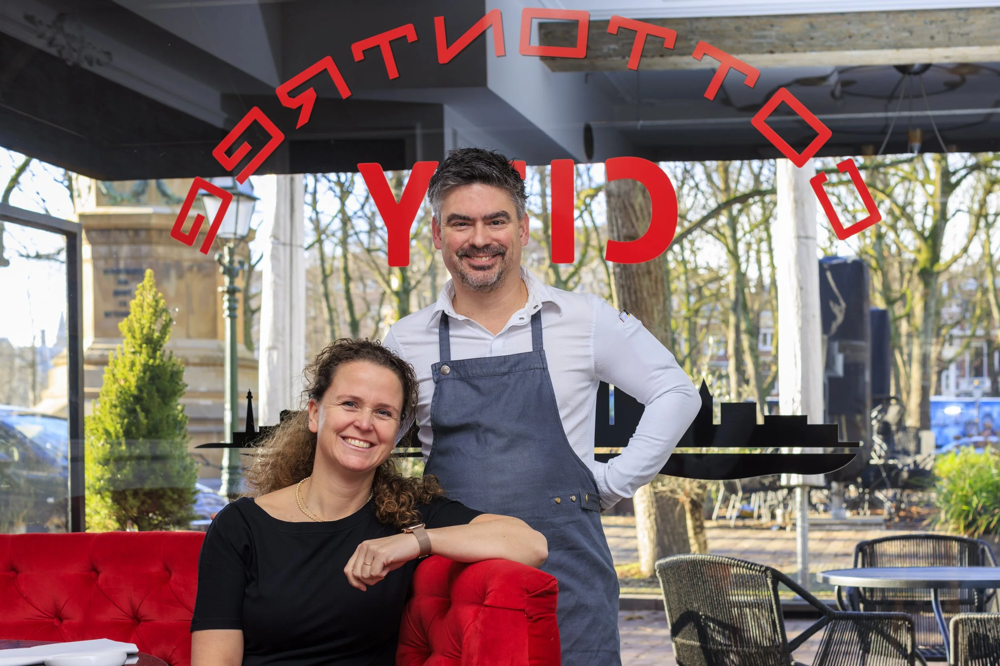

Cottontree Cityby Dimitri
Moderne stadsbistro aan het Lange Voorhout. Betaalbare, eerlijke en smaakvolle gerechten, doorlopend van 12.00 tot 22.00 uur.
“Herkenbaar, verzorgd en gul. Degelijk klassiek koken waar je heel vrolijk van wordt.”
AD De Gouden PollepelOpgenomen in Lekker 500, de beste 500 restaurants van Nederland 2025
Cottontree City kent geen onderscheid tussen voor-, tussen- en hoofdgerecht. U kiest wat u lekker vindt, en Dimitri kookt met zoveel mogelijk seizoens- en streekproducten.
- 21elk à la carte-gerecht
- 29de vertrouwde klassiekers
- 523 gangen menu Dimitri, ook in 4 of 5 gangen
De kaart
De kaart wisselt met de seizoenen. Dit is de huidige kaart.
21 per gerecht
Normandische oesters (6)
citroen · sjalotvinaigrette
Zacht gegaarde zeeduivel
aubergine · rouille · tomaat
Mousse van ratatouille
courgette · basilicum · olijf
2 bereidingen van tonijn
pompoen · ponzu · bundelzwam
Geroosterde octopus
olijf · polenta · paprika
Gerookte eendenborst
biet · lavas · vossenbessen
Bisque van kreeft
bieslook · groene asperge · kreeft
Ravioli gevuld met pompoen
akkerzwam · ricotta · vadouvansaus
Gegrilde rogvleugel
kappertjes · bimi · balsamico
Gebakken scholfilet
fregola · chorizo · saus van beurre noisette
Gebakken kalfslende
eekhoorntjesbrood · pastinaak · kalfsjus
Gebraden hertenbiefstuk
rode kool · kastanje · eigen jus
Bijgerechten 6
Kropsla met augurk · Friet met mayonaise · Seizoensgroenten
29 per gerecht
Een knipoog naar het verleden van City: vertrouwde klassiekers die altijd op de kaart staan.
Lauwwarme ½ kreeft
bospeen · meloen · tom kha kai
Gebakken eendenlever
appel · suikerbrood · gevogeltejus
Steak tartare
friet · kropsla · mayonaise
Krokant gebakken zwezerik
kalfswang · pompoen · kalfsjus
Gebakken coquille
witlof · Pata Negra · beurre blanc
Gebraden ½ fazant
rookworst · zuurkool · eigen jus
15 per dessert
Warm chocolade taartje
bramen · ganache · bramen roomijs
Mille-feuille
appel · tonkaboon · karamelijs
Peer
amandel · pecannoot · bergamot
17 klassieker
Crêpes Suzette
sinaasappel · Grand Marnier · vanille roomijs
Cognac
- Courvoisier V.S.
- 6,50
- Paul Giraud V.S.O.P.
- 9,00
- Paul Giraud Napoleon
- 12,00
Armagnac
- Clés de Ducs
- 4,50
- Clés de Ducs V.S.O.P.
- 6,50
Grappa
- Nonino Vendemmia
- 6,50
- Nonino Chardonnay Barrique
- 9,00
- Sarpa di Poli
- 9,00
Calvados
- Château du Breuil
- 4,50
- Château du Breuil V.S.O.P.
- 6,50
Whisky
- The Famous Grouse
- 4,50
- The Balvenie
- 9,00
- Laphroaig
- 9,50
- The Glenlivet
- 12,50
Eau de vie
- Poire Williams
- 6,00
- Marc de Bourgogne
- 7,50
Likeuren 6,50
Baileys · Grand Marnier · Frangelico · Cointreau · Kahlúa · Licor 43 · Sambuca · Drambuie · D.O.M. Bénédictine · Disaronno
Prijzen in euro. Reserveer een tafel
Wijn
De sommelier zorgt voor een verrassende wijnselectie die regelmatig wisselt. Veel wijnen worden per glas of in een arrangement geschonken.

Aperitief16 dranken
Mousserend
City’s Kirr Royalcava, gin, campari, cointreau
glas 9,00
Cava, Oriol Rossell, Brut, Cuvée Especial50% xarello, 30% macabeu en 20% parellada
glas 7,50 fles 37,50
Champagne, Leclerc Briant, Réserve Extra Brut40% pinot noir, 20% chardonnay, 40% pinot meunier
glas 13,75 fles 85,00
Champagne, Leclerc Briant, Rosé Extra Brut5% pinot noir, 95% chardonnay
fles 137,50
Champagne, Ruinart, Blanc de blancchardonnay
fles 175,00
Spritz
Aperol Spritzaperol, cava, bruiswater
glas 10,00
Campari Spritzcampari, cava, bruiswater
glas 10,00
Negronigin, campari, rode vermouth
glas 12,50
Gin
wordt geserveerd met Fevertree Tonic
Bombaycitroen
glas 11,50
Bombay Eastcitroengras, zwarte peper
glas 13,50
Hendrick’skomkommer
glas 13,50
Wenneker Elderflowerlimoen
glas 12,50
Bobby’ssinaasappel, kruidnagel
glas 13,50
Non Alcoholisch
wordt uitsluitend geserveerd met Fevertree Tonic
Seedlip Grove 42 ’aromatic’sinaasappel
glas 11,00
Seedlip Spice 94 ’citrus’grapefruit
glas 11,00
Seedlip Garden 108 ’garden’sugar snaps
glas 11,00
Wit uit Frankrijk17 wijnen
Pay’s Doc 2025, DomPeynacchardonnay
glas 8,00 fles 40,00
Elzas 2023, Baumann-Zirgelriesling
fles 42,50
Pouilly Fumé 2025, André et Edmond Figeat ‘Les Origines’sauvignon blanc
fles 57,50
Elzas 2023, Domaine Amelie & Charles Sparrpinot blanc
fles 60,00
Noord-Rhône 2023, Domaine Du Chêne ‘Adrian’viognier
fles 60,00
Anjou 2023, Domaine Plaisancechenin blanc
fles 65,00
Crozes-Hermitage 2025, Yann Chavemarsanne, roussanne
fles 75,00
Elzas 2017, Domaine Jean Sipp ‘Kirchberg’ Grand Cruriesling
fles 92,50
Bourgogne
Bourgogne 2024, Domaine Olivier ‘Les 2 Dindes’chardonnay
fles 65,00
Saint-Romain 2024, Domaine Rapet ‘La Périère’chardonnay
fles 70,00
Pouilly-Fuissé 2023, Dominique Corninchardonnay
fles 97,50
Pernand-Vergelesses 2023, Antonin Cosnier ‘La Morand’chardonnay
fles 105,00
Saint-Aubin 1er Cru 2023, François d’Allaines ‘Les Frionnes’chardonnay
fles 140,00
Meursault 2023, Domaine Buisson Battault ‘Le Limozin’chardonnay
fles 145,00
Chablis 1er Cru 2020, Vincent Dauvissat ‘Vaillons’chardonnay
fles 150,00
Puligny-Montrachet 1er Cru 2020, Chapelle de Blagny ‘Hameau de Blagny’chardonnay
fles 165,00
Chassagne-Montrachet 2023, Jean Claude Bachelet ‘Les Encégnières’chardonnay
fles 175,00
Wit uit Italië, Oostenrijk & Duitsland16 wijnen
Wit uit Italië
Friuli 2024, Villa Chiòprispinot grigio
glas 7,00 fles 35,00
Puglia 2023, Produttori di Manduria ’Alice’verdeca
fles 40,00
Sardinië 2024, Cantine di Dolianova ’Prendas’vermentino
glas 8,00 fles 40,00
Soave 2023, Roccolo Grassi ’La Broia’garganega
glas 9,50 fles 47,50
Sicilie Etna 2022, Valenti ’Enrico IV’carricante
fles 50,00
Roero 2024, Massimo Rattalino ’Unus’arneis
fles 52,50
Friuli Collio 2023, Livon ’Solarco’friulano, ribolla gialla
fles 62,50
Südtirol 2019, St. Michael-Eppan ’Mintiggl’riesling
fles 65,00
Friuli Venezia Giulia 2022, Livon ’Braide Alte’chardonnay, sauvignon, picolit, moscato giallo
fles 90,00
Wit uit Oostenrijk/ Duitsland
Niederösterreich 2025, Hiedler ’Löss’grüner veltliner
glas 9,00 fles 45,00
Kamptal 2023, Weingut Bründlmayerriesling
fles 62,50
Ahr 2024, Meyer-Näkel ’Ahrweiler’weissburgunder
fles 75,00
Niederösterreich 2022, Weingut Bründlmayer ’Ried Spiegel’grauburgunder, weissburgunder
fles 77,50
Kamptal 2023, Schloss Gobelsburg ’Ried Renner’grüner veltliner
fles 85,00
Niederösterreich 2022, Hiedlerchardonnay
fles 125,00
Wachau 2020, Prager ’Ried Achleiten’ Smaragdgrüner veltliner
fles 135,00
Overig wit11 wijnen
Overig wit
Spanje Almansa 2024, Bodega Santa Cruz de Alpera ’Cueva del Chamán’verdejo
fles 30,00
Spanje Almansa 2024, Bodega Santa Cruz de Alpera ’Cueva del Chamán’sauvignon blanc
glas 6,00 fles 30,00
Spanje Tierra de Leon 2025, Pardevallesalbarin
glas 8,50 fles 42,50
Zuid-Afrika Paarl 2024, Mason Roadchenin blanc
fles 42,50
Nieuw-Zeeland Hawkes Bay 2024, Te Matasauvignon blanc
fles 45,00
Spanje Ribeiro 2022, Castes Brances ’Tiro al Blanc’godello, treixadura, albariño, loureiro
fles 55,00
Spanje Galicië 2024, Viña Almirante ’Eivi’albariño
fles 55,00
Slovenie Primorje 2020, Domaine Vicomte de Nouë-Marinic ’Erigone’malvasia
fles 57,50
Zuid-Afrika West-Kaap 2023, Lismore Estate ’The Age of Grace’viognier
fles 70,00
USA Monterey Countey 2024, Bernarduschardonnay
fles 75,00
Zuid-Afrika West-Kaap 2022, Duncan Savagesauvignon blanc, semillion
fles 82,50
Rosé & kelderrestanten11 wijnen
Rosé
Frankrijk Languedoc 2023, Well of Winegrenache, syrah
fles 30,00
Frankrijk Provence 2025, Domaine Saint-Andrieusyrah, grenache, cinsault
fles 45,00
Wit
Zuid-Afrika Montagu 2022, Reenen Borman ’Patatsfontein wit versnit’chenin blanc, colombard
fles 55,00
Zuid-Afrika Wellington 2021, Rall Winescinsault blanc
fles 70,00
Oostenrijk Wachau 2021, Domäne Wachau ’Achleiten’ Smaragdriesling
fles 115,00
Frankrijk Limoux 2019, Domaine de Baronarqueschardonnay
fles 105,00
Rood
Frankrijk Madiran 2021, Domaine Labranche Laffont ’Vieilles Vignes’tannat
fles 57,50
Italië Nebbiolo d’Alba 2018, Massimo Rattalino ’Ventisette27’nebbiolo
fles 60,00
Frankrijk Morgon 2023, Jean Foillard ’Côte du Py’gamay
fles 70,00
Frankrijk Loire 2023, Sébastien David ’Hurluberlu’ (Magnum)cabernet franc
fles 80,00
Frankrijk Pommard 1er Cru 2018, Comte Armand ’Clos de Epeneux’pinot noir
fles 280,00
Rood uit Frankrijk & Rhône15 wijnen
Rood uit Frankrijk
Pays D’oc 2021, Le Quartiermerlot
glas 6,00 fles 30,00
Madiran 2021, Domaine Labranche Laffont70% tannat, 20% cabernet franc en 10% cabernet sauvignon
fles 42,50
Côtes du Roussilion 2023, Domaine Singla ’Asencio’70% syrah, 30% grenache
fles 45,00
Juliénas 2023, Domaine Matraygamay
fles 42,50
Anjou 2022, Chateau de Plaisance ’Sur La Butte’cabernet sauvignon, cabernet franc
fles 72,50
Bandol 2021, Domaine du Gros’Norémourvèdre 40%, grenache 40%, cinsault 5%
fles 95,00
Cahors 2016, Chateau du Cèdre ’Le Cèdre’malbec
fles 100,00
St Nicolas de Bourgueil 2018, Sébastien David ’Vin D’une Oreille’cabernet franc
fles 105,00
Rhône
Noord-Rhône 2022, Jocelyn & Yves Lafoy ’Alliance’syrah
fles 55,00
Vacqueras 2021, Domaine La Fourmone ’Les Ceps d’Or’grenache
fles 62,50
Crozes Hermitage 2022, Domaine Des Hauts Chassis ’Les Galets’syrah
fles 70,00
Châteauneuf du Pape 2022, Le Dieux Donjon75% grenache, 10% syrah, 10% mourvedre en 5% cinsault
fles 115,00
Cornas 2017, Yves Cuilleron ’Les Vires’syrah
fles 117,50
Châteauneuf du Pape 2017, Domaine Saint Prefért ’August Favier Reserve’grenache 85%, cinsault 15%
fles 120,00
Côte-Rôtie 2019, Jocelyn & Yves Lafoy ’Rozier’syrah, viognier
fles 172,50
Bordeaux & Bourgogne20 wijnen
Bordeaux
Château Jean Faux, La Dame 2021
fles 55,00
Château Jean Faux, Sainte-Radegonde 2016
fles 72,50
Château Poujeaux, Moulis-en-Medoc 2019
fles 105,00
Château Faizeau, Montagne St Emilion 1995 (magnum)
fles 120,00
Château du Tertre, Margaux 5eme Grand Cru Classé 2017
fles 135,00
Château Jean Faure, Saint-Emilion Grand Cru Classé 2019
fles 142,50
Château Phélan Ségur, Saint-Estéphe 2015
fles 150,00
Château Beau-Sejour Becot, Saint-Emilion Premier Grand Cru 2000
fles 165,00
Alter Ego de Palmer, Margaux 2020
fles 215,00
Château Malescot st. Exupéry, Margaux 3eme Grand Cru Classé 1997 (magnum)
fles 350,00
Bourgogne
Bourgogne 2021, François Confuron-Gindrepinot noir
fles 70,00
Mercurey 2019, Domaine de la Tourpinot noir
fles 72,50
Monthelie 2022, Domaine Gauffroypinot noir
fles 82,50
Saint-Aubin 1er Cru 2018, Henri Prudhon ’Sur le Sentier du Clou’pinot noir
fles 85,00
Côtes de Nuits-Villages 2019, Domaine Jean-Jacques Confuron ’Les Vignottes’pinot noir
fles 85,00
Santenay 1er Cru 2020, Domaine Olivier ’Beaurepaire’pinot noir
fles 95,00
Volnay 2023, Jean François Rapet ’Les Echards’pinot noir
fles 100,00
Auxey-Duresses 1er Cru 2023, Comte Armandpinot noir
fles 130,00
Pommard 1er Cru 2020, Francois D’Allaines ’Clos de Verger’pinot noir
fles 140,00
Savigny-les-Beaune 2022, Domaine Simon Bize ’Aux Grands Liards’pinot noir
fles 145,00
Rood uit Italië13 wijnen
Rood uit Italië
Montepulciano d’Abruzzo 2022, Illuminati ’Ilico’montepulciano
glas 8,00 fles 40,00
Marremma 2020, Berrettasangiovese
glas 8,50 fles 42,50
Manduria 2021, Produttori di Manduria ’Lirica’primitivo
fles 45,00
Cagliari 2019, Dolianova ’Blasio’, Cannonau di Sardegna, Riservacannonau
fles 45,00
Sicilië 2018, Valenti ’Norma’nerello mascalese
fles 47,50
Valpolicella 2020, Zanoni, Ripassocorvina, rondinella, corvinone
fles 55,00
Piemonte 2020, Ricci ’San Martino’nebbiolo
fles 60,00
Chianti Classico Riserva 2017, Castello di Verrazzanosangiovese
fles 75,00
Sicilië 2013, Gulfi ’neroBufaleffj’nero d’avola
fles 90,00
Barolo 2020, Roccheviberti ’Vecchie Viti’nebbiolo
fles 100,00
Barbaresco 2021, Carlo Giacosa ’Montefico’nebbiolo
fles 110,00
Amarone della Valpolicella 2018, Roccolo Grassicorvina, rondinella, corvinone
fles 135,00
Brunello di Montalcino Riserva 2012, Franco Pacenti, Canalicchiobrunello
fles 150,00
Rood: Oostenrijk, Duitsland & overig20 wijnen
Rood uit Oostenrijk/ Hongarije/ Duitsland
Oostenrijk Neusiedlersee 2018, Judith Beck ’Ink’zweigelt, st laurent
fles 40,00
Duitsland Ahr 2022, Weingut Nelles ’Schieferboden’spätburgunder
glas 8,50 fles 42,50
Hongarije Szekszárd 2020, Sebestyén Pince ’Mozaik’50% kékfrankos, 21% cabernet franc, 21% merlot, 8% kadarka
fles 55,00
Oostenrijk Burgenland 2023, Weninger ’Höchacker’blaufränkisch
fles 55,00
Oostenrijk Thermenregion 2017, Johanneshof Reinisch ’Frauenfeld’sankt laurent
fles 60,00
Duitsland Württemberg 2014, Kistenmacher & Hengerer ’Heilbronn Stiftsberg’lemberger
fles 55,00
Duitsland Ahr 2019, Weingut Nelles ’Madeleine’frühburgunder
fles 65,00
Duitsland Ahr 2022, Meyer-Näkel ’Blauschiefer’spätburgunder
fles 75,00
Oostenrijk Burgenland 2016, Weninger ’Saybritz’blaufränkisch
fles 90,00
Oostenrijk Burgenland 2013, Umathum ’Ried Hallebühl’zweigelt
fles 145,00
Overig Rood
Spanje Monterrei 2024, Pazo das Tapias ’Lagar da Xestosa’mencia
glas 8,00 fles 40,00
Spanje Valencia 2022, Rafael Cambra ’DOS’cabernet sauvignon, monastrell, cabernet franc
fles 42,50
Spanje Mallorca 2024, Ca’n Verdura Viticultorsmanto negro 43%, syrah 33%, callet 10%, merlot 8%, cabernet sauvignon 4%, monastrell 2%
glas 9,00 fles 45,00
Spanje Priorat 2021, Cims de Porrera ’Vi de Vila’cariñena, garnacha
fles 65,00
Portugal Duoro 2019, Quinta do Valladotouriga nacional
fles 75,00
Zuid-Afrika West-Kaap 2020, Duncan Savage ’Follow the Line’cinsault
fles 82,50
Spanje Ribera Sacra 2020, Zarate ’Penapedre’fieldblend (o.a. mencia, garnacha tintorera)
fles 90,00
Spanje Ribera del Duero 2023, Dominio de Pingus ’PSI’garnacha, tempranillo
fles 90,00
Zuid-Afrika Stellenbosch 2018, De Toren ’Fusion V’cabernet sauvignon, malbec, petit verdot, merlot, cabernet franc
fles 110,00
Spanje Rioja Alta 2015, Benjamin Rothschild & Vega Sicilia ’Macan Classico’tempranillo
fles 120,00
Jaartallen, prijzen en beschikbaarheid onder voorbehoud. Prijzen in euro.

Dineren vóór het theater
59 p.p. voor het 4-gangen theatermenu
Gaat u naar de Koninklijke Schouwburg / Het Nationale Theater, Theater Diligentia of Theater PePijn? Ze liggen allemaal op loopafstand van Cottontree City, in het uitgaanscentrum en Museumkwartier van Den Haag.
Wij houden er uiteraard rekening mee dat u op tijd bent. Reserveer om 18:00 uur, en om 19:45 uur loopt u naar de voorstelling.
Parkeren: Museumkwartiergarage, nog geen 300 meter lopen.
Reserveer het theatermenu
Over Cottontree City
“Het is altijd een droom geweest om samen een restaurant te openen.”
Het restaurant staat onder leiding van Dimitri Heinrichs en zijn partner Manon Heinrichs-Hemmink. Hij begon ooit als souschef, met een grote passie voor koken. Zij komt uit de financiële sector en heeft oog voor details. Sinds 2018 zijn ze hier dagelijks te vinden.
In de tijd van Le Bistroquet maakte de Haagse fotograaf Theo Meijer hier de beroemde foto van politicus Hans Wiegel. Tegenwoordig is het restaurant met de knalrode voorgevel, tussen de voormalige Amerikaanse ambassade en het Escher museum, haast niet te missen.
Binnen is plaats voor ruim 50 gasten, tussen kunst aan de muur, rood meubilair en ronde banken. In de zomermaanden is er een terras met een prachtig uitzicht.
Onze leveranciers
Kwaliteit en lokaliteit staan bij ons hoog in het vaandel. Hollandvis uit Scheveningen is al jaren onze trouwe visleverancier: van Noordzeevis tot garnalen en een prachtige tonijn. Dimitri zoekt er regelmatig zelf zijn vis uit, en Hollandvis levert twee keer per dag, zodat we altijd met de meest verse vis koken.
Reserveer een tafel
Met meer dan 7 personen? Neem dan telefonisch (070 360 11 70) of per mail (city@cottontree.nl) contact op.
Contact & route
Lange Voorhout 982514 EJ Den Haag
070 360 11 70
city@cottontree.nl
Openingstijden
| Maandag | 12.00 – 22.00 |
|---|---|
| Dinsdag | 12.00 – 22.00 |
| Donderdag | 12.00 – 22.00 |
| Vrijdag | 12.00 – 22.00 |
| Zaterdag | 12.00 – 22.00 |
Service continue: doorlopend geopend van 12.00 tot 22.00 uur.
Parkeren
- Pleingarage overdag vaak vol
- Parkeergarage Malieveld 5 minuten lopen, overdag altijd plek
- Museumkwartiergarage nog geen 300 meter lopen
Met de taxi
Komt u met de taxi? Cottontree City werkt samen met Hofstadtaxi, zodat u uw rit eenvoudig bestelt.
Werken bij Cottontree City
Souschef / chef de partiestart per 1 januari 2027
Toe aan een volgende stap in de keuken? Wij zoeken een souschef of chef de partie die graag met goede producten werkt, verantwoordelijkheid neemt en plezier heeft in het vak. Aan het Lange Voorhout kook je samen met Dimitri en het keukenteam. Seizoensproducten, vertrouwde klassiekers en smaakvolle gerechten vormen de basis.
Wie zoeken wij?
- Relevante keukenervaring
- Je werkt zelfstandig én samen
- Oog voor smaak, kwaliteit en presentatie
- Je blijft rustig tijdens een drukke service
- Je wilt je verder ontwikkelen en neemt initiatief
Wat bieden wij?
- Een zelfstandige functie in een betrokken team
- Een ongedwongen werksfeer en ruimte voor eigen inbreng
- Werken met seizoensproducten
- Een passend salaris op basis van ervaring en verantwoordelijkheden
Kennismaken? Stuur je cv en een korte motivatie naar city@cottontree.nl, onder vermelding van ‘Vacature keuken’. Vertel ons welke rol bij je past en waarom je graag bij ons wilt komen koken.
Medewerker bedieningoproepkracht
Op zoek naar een baan naast je studie en hobby’s? Heb je een passie voor horeca, word je blij van het in de watten leggen van gasten en wil je werken met een gedreven en heel gezellig team op de állermooiste plek van Den Haag? Dan is deze job misschien iets voor jou.
Wij zoeken iemand met
- Ervaring in het vak
- Een echt horecahart en gastvrijheid in het bloed
- Flexibel en collegiaal
- Zin om met de gast mee te denken over wijn en spijs
Wat bieden wij?
- Een optimale leer- en werkomgeving
- Een hecht, jong en enthousiast team
- Een ongedwongen sfeer
- Een zelfstandige functie met ruimte voor eigen inbreng
- Een passend salaris op basis van ervaring
Enthousiast? Stuur je sollicitatiebrief en cv ter attentie van Manon Heinrichs naar city@cottontree.nl.